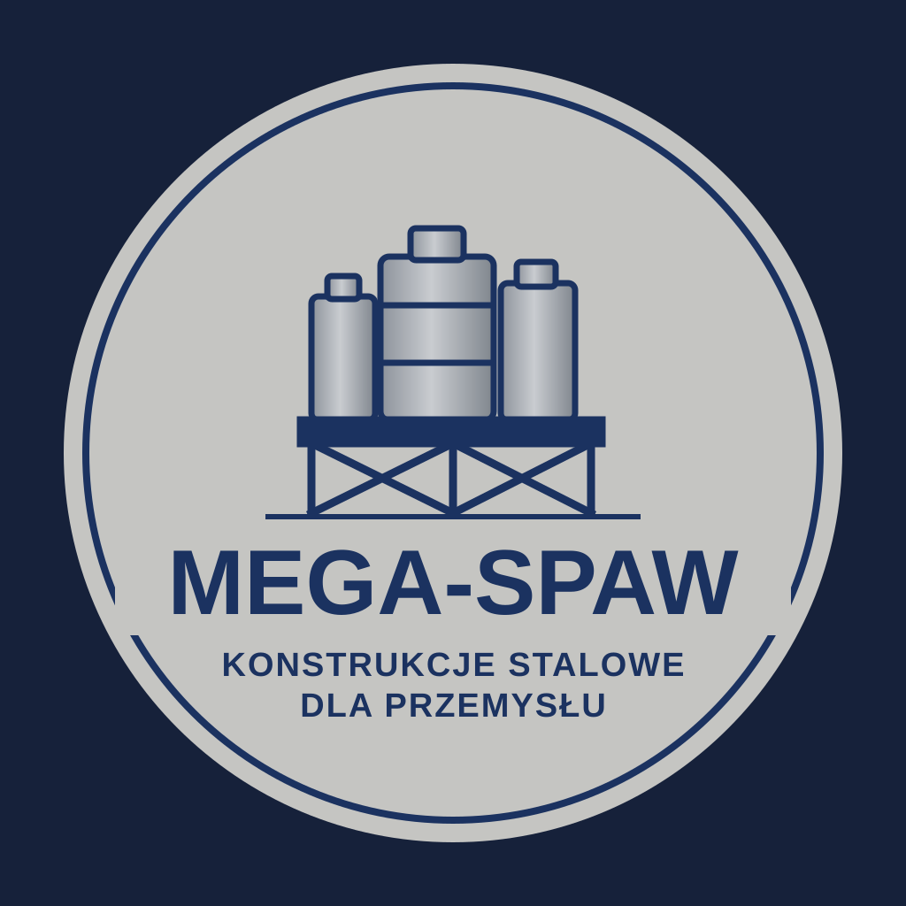

Spawanie MIG/MAG
Coś pękło
przed
sezonem?
maszyny rolnicze i przyczepy
konstrukcje stalowe i ramy
bramy i balustrady
Wycena w 24 h
Wyślij zdjęcie 👇 link w poście
Dojazd do klienta
Milicz · Sułów
Spawanie MIG/MAG
Napraw zimą.
Wiosną
jedź
w pole.
ramy, dyszle i burty przyczep
maszyny przed sezonem
Wycena w 24 h
Wyślij zdjęcie 👇 link w poście
Dojazd do klienta
Milicz · Sułów